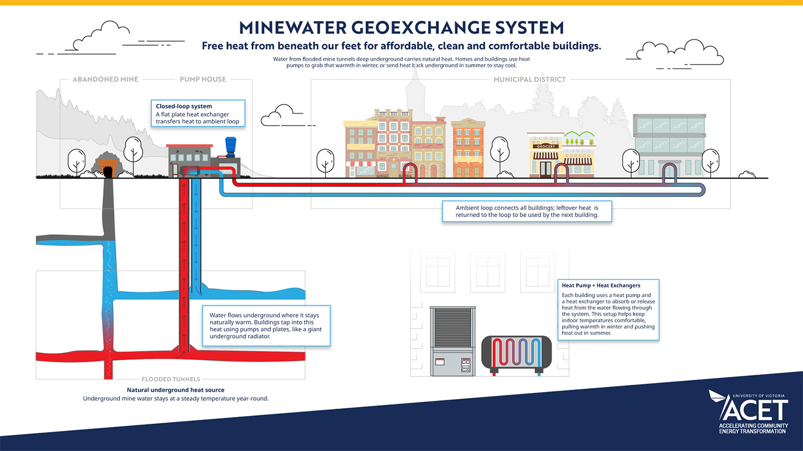
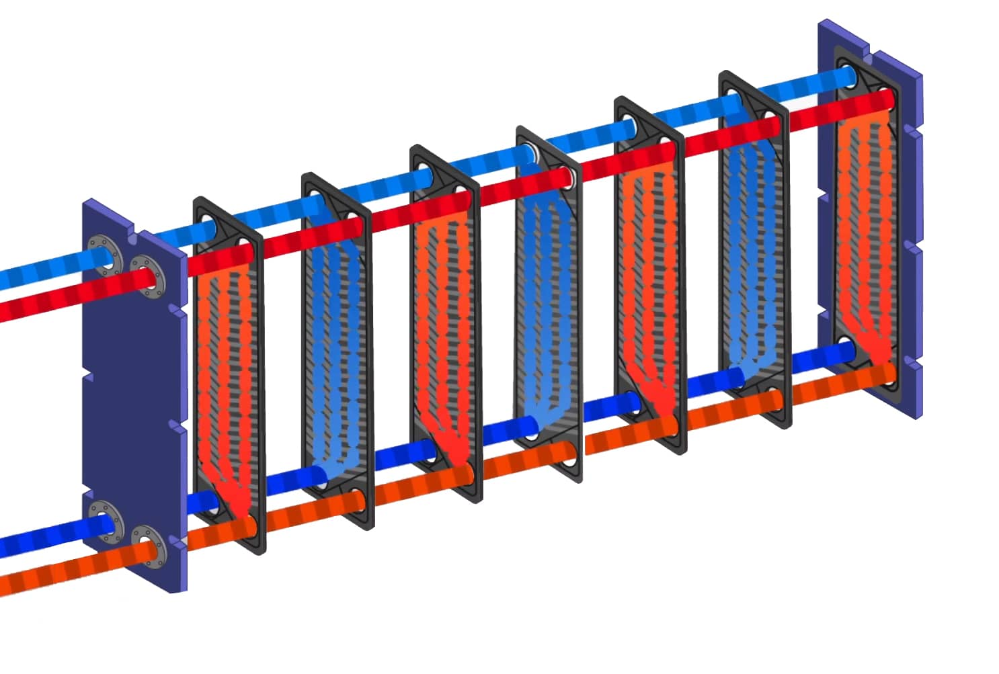
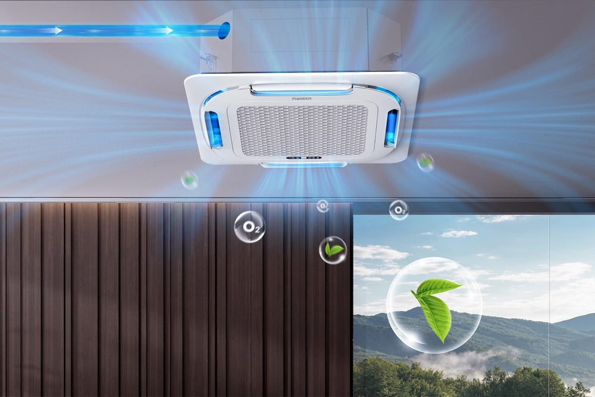
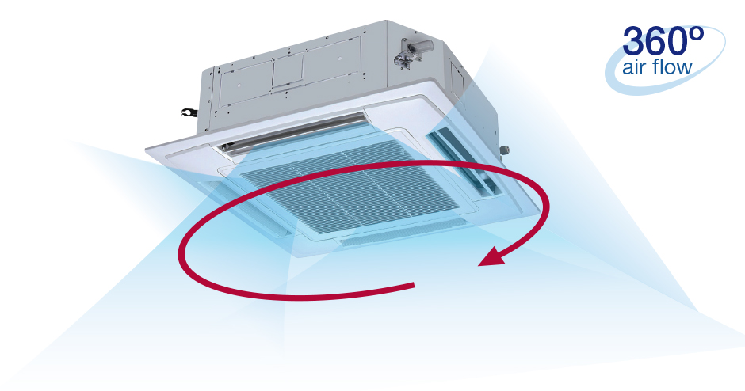
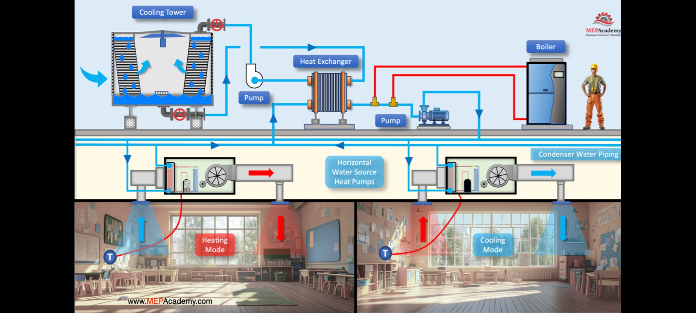
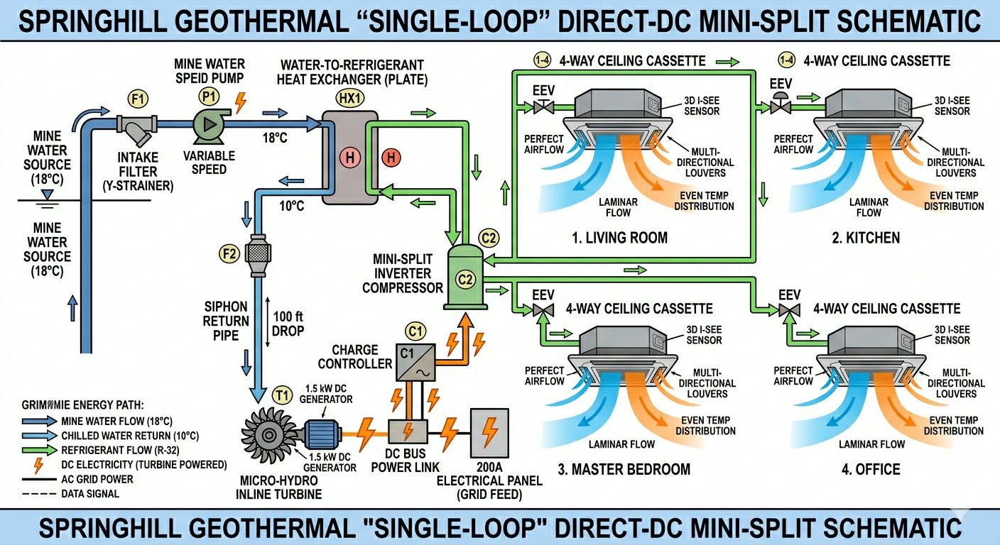

A Residential Geothermal Innovation for Springhill, Nova Scotia
This innovative residential geothermal system is based on the original single-loop concept and schematic invented by Ralph Ross of Ross Refrigeration.
Credits & Collaboration:
• Original Concept, Schematic & Core Invention: Ralph Ross (Ross Refrigeration)
• Product Development & Collaborative Invention: Rob Charest — Inventor assisting with refinement, productization, and commercialization
• Enhanced Design (Closed-Loop Piggyback + Solar Integration) & Project Lead: Andrew Ross
The system harnesses Springhill’s abundant flooded mine water (\~18°C stable temperature) for efficient, year-round heating and cooling without the -25°C limitations of air-source heat pumps. It features direct-DC power, micro-hydro self-generation, and zoned comfort via four 4-way ceiling cassettes.
Reference: Springhill mine water geothermal assessment — glargod.github.io/fishing/geospring.html
Mine water is pumped through the plate heat exchanger (HX1) to transfer heat to the R-32 refrigerant loop. The inverter compressor powers the system, while chilled return water drops 100 ft to drive the micro-hydro turbine for on-site DC electricity. Refrigerant serves the four independent ceiling cassettes.
A sealed glycol loop circulates through submerged coils in the mine, exchanging heat at HX1 without mine water entering home equipment. This improves durability and simplifies permitting while preserving the core design.
Solar PV connects directly to the DC bus, supplementing micro-hydro for greater energy independence and resilience.
Recommended Airflow: \~400 CFM per ton (350–450 CFM/ton range) for optimal comfort and dehumidification with the variable-speed ceiling cassette fans.






Springhill pioneered mine-water geothermal in the 1980s and remains a world leader. The flooded mines provide a vast, stable thermal reservoir at \~18–20°C (deeper sections potentially \~26°C). This system scales that proven community technology to individual homes with closed-loop durability, micro-hydro self-powering, and solar integration.
It is technically strong for Springhill properties, with direct access to the resource offering significant advantages. The design delivers quiet, zoned comfort and year-round efficiency without cold-weather performance loss.
We welcome geothermal engineers, contractors, and manufacturing partners to help implement and commercialize this system.
© 2026 Andrew Ross, Ralph Ross, and Rob Charest. All rights reserved.
This conceptual design and website are for informational and collaboration purposes only. The system is a work-in-progress invention. No warranties are expressed or implied regarding performance, safety, or suitability for any specific installation. Professional engineering, permitting, and site-specific assessment by qualified experts are required before any implementation. Contact us for collaboration opportunities.